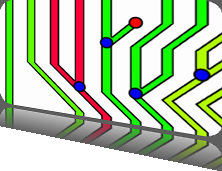

5th Symposium on Biological Data Visualization
10- 11 July // Dublin, Ireland @ ISMB/ECCB 2015
10- 11 July // Dublin, Ireland @ ISMB/ECCB 2015

Poster Submission
Overview
The BioVis 2014 Posters track offers a venue to present and discuss new research in biological data visualization. Submissions take the form of a short (250-word) abstract with a supporting figure and are presented at the conference site as large format posters during a dedicated poster session. The BioVis symposium as a whole aims to promote interaction between the visualization, bioinformatics, and biology communities, and the BioVis poster session offers an interactive forum that encourages graphical presentation, demonstration, and active engagement with BioVis participants as well as all ISMB attendees.
Important change from previous years:
The submission deadline (May 24, 2014) was moved, reflecting the new symposium dates (July 11-12, 2014) which were changed due to co-location with ISMB.
Submission
Important dates:
Submission Deadline: May 24, 2014
Notification: June 1, 2014
Online submission system:
To submit a poster abstract go to https://precisionconference.com/~vgtc, log in, and select "Submit to Posters" under the BioVis 2014 header on the "new submissions" tab.
Requirements:
The following items are required for a complete poster submission:
250-word text-only abstract summarizing the subject matter of the poster. It is critical to clarify the target biological problem, the role of visualization, and the work’s relevance to BioVis.
A single figure representative of the work in jpg or png format. It is particularly helpful for this image to illustrate how visualization is being employed to address a biological problem and it will be used as part of the poster submission reviewing process. An accompanying figure legend should be included in the appropriate field of the online submission form.
The large format poster itself is NOT required in the submission. We strongly encourage, but do not require, all authors to include an accompanying video or other supplementary materials. Please limit supplementary material to widely accepted file formats such as MPEG (.mpg), QuickTime (.mov) or AVI (.avi) for videos; PDF for documents; and PNG or JPG for images.
Thumbnail Image:
Accepted posters are asked to provide a thumbnail image that will be used when posting the abstract on the BioVis web site. The image must be a 400x300 pixel jpg or png file. Examples from previous years can be found at http://www.biovis.net/year/2013/posters and http://www.biovis.net/year/2012/posters.
Topics:
Example poster topics include, but are not limited to:
- Work-in-progress and preliminary results
- Previously published work from other venues
- Visualization challenges relevant to the BioVis community
Please see the online BioVis 2014 Call for Participation (CFP) for a full listing of BioVis topics: http://www.biovis.net/year/2014/info/cfp
Review Process
Each poster submission will be read and evaluated by the Poster Chairs for quality and relevance to the BioVis venue with the goal of being as inclusive as possible and encouraging cross-domain interactions. Brief feedback will be provided as needed to support acceptance decisions, but authors should not expect detailed reviews. There will not be a revision cycle. Authors should check their initial abstract submission carefully as this is the copy that will appear on the BioVis web site.
Preparing for the Poster Session
At least one author from each accepted submission is required to:
present a preview of their accepted work in a plenary “fast-forward” session
present an explanatory hardcopy poster during the dedicated poster session
Fast-forward session:
The fast-forward session gives authors the opportunity to promote their poster to the symposium attendees. One author from each poster will have 30 seconds to present one PowerPoint slide summarizing the work. The Poster Chairs will collect and assemble slides from authors in advance of the conference (NOT required for the original submission).
Fast-forward slides should follow these guidelines:
PowerPoint compatible (avoid non-standard fonts that might have version compatibility issues)
Simple animations are OK, but must be automated (please observe the 30 second time limit)
We will include a transition slide with the poster title, number, and author names, so you do not need to include this information
Poster session:
Authors of accepted posters are required to bring an explanatory hardcopy poster for display throughout the BioVis symposium. At least one author should be available at the poster to discuss their work during the scheduled poster session.
We strongly encourage authors to show a live demo and/or videos of their work alongside the hardcopy poster. Authors are expected to bring their own equipment for the demo (e.g. laptop), but tables will be provided. We cannot guarantee that power outlets or wireless networking will be available.
The posters themselves have no predefined formatting, but dimensions may not exceed 46 inches wide by 45 inches high. There will be 2 posters per side on each poster board. The large format poster is only required for the on-site symposium and is NOT part of the original submission.
Best Poster Award
A best poster award will be given. Authors of the 'Best Poster' will receive signed certificates during the BioVis Awards session as well as a prize. This award is based on the poster as presented at the poster session. A panel of judges chosen by the Poster Chairs will score their assigned posters and these scores will be used to determine the best poster.
Archiving
All abstracts will be considered a "personal communication" to the symposium attendees and will not be published in the proceedings. Abstracts and associated figures will be included with the distributed symposium materials (USB stick) and will appear on the BioVis website. Examples from previous years can be found here:
Poster Chairs
For details about the symposium or to discuss any aspects of your submission please communicate with the Poster Chairs:
Alexander Lex, Harvard University
Marc Streit, Johannes Kepler University Linz
BioVis 2014 is an official SIG of ISMB

BioVis 2014 Supporters
Platinum:

Silver:


We also acknowledge the support by BMC.